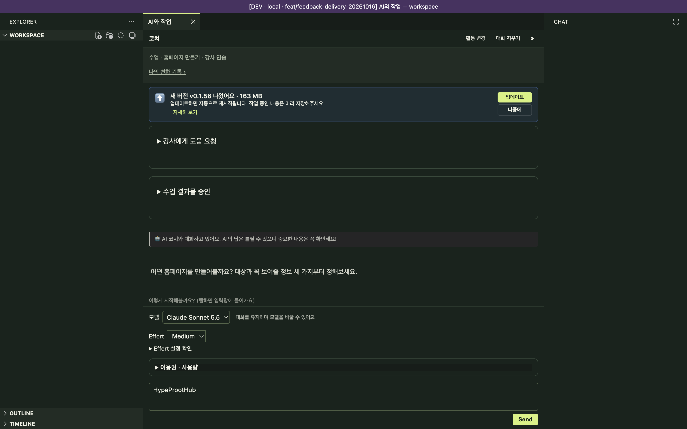

목적
내가 선택한 작업 폴더 안에서 파일을 찾고 저장합니다. Studio가 다른 폴더를 대신 고르거나 결과를 자동 게시하지 않습니다.
준비
- 수업이나 개인 작업에 사용할 폴더를 알고 있는지 확인합니다.
- 기존 파일을 고치기 전에는 파일을 열어 내용과 현재 폴더를 확인합니다.
- 로그인·활동 연결이 필요한 수업 폴더라면 강사가 안내한 계정 흐름만 사용합니다. 암호나 토큰을 문서·채팅에 붙이지 않습니다.
파일과 폴더 열기
- 시작 화면 아래의 작업 폴더 열기를 선택하거나 File → Open Folder에서 본인 작업 폴더를 고릅니다. Explorer의 폴더 이름을 먼저 확인합니다.
- 파일 목록이 닫혀 있으면 명령 팔레트에서 HypeProof: 작업 파일 열기를 실행합니다. 이 명령은 Explorer를 다시 보여 줍니다.
- Explorer에서 원하는 폴더를 선택하고 새 폴더·새 파일 아이콘으로 만듭니다. 기존 파일은 목록에서 열어 편집한 뒤 저장합니다.
정상 결과: 선택한 폴더 이름과 만든 파일이 Explorer에 나타납니다. 파일을 다시 열어 예상한 내용이 저장됐는지 확인합니다. 사용자가 나중에 바꾼 Explorer 배치는 그대로 유지됩니다.
실패 시: 잘못된 폴더면 다시 본인 폴더를 고릅니다. 권한 오류는 접근 가능한 폴더나 담당자에게 확인합니다. 저장이 안 되면 본인 폴더에 다른 이름으로 저장하고 원본은 덮어쓰지 않습니다.
폴더 바꾸기와 기존 작업 다시 열기
- 작업을 저장한 뒤 시작 화면의 작업 폴더 열기에서 목적지를 고릅니다. 연결된 활동이 있으면 해당 활동을 확인합니다. 미리보기에서 다른 작업 폴더 선택으로 위치를 바꿀 수도 있습니다.
- 연결되지 않은 폴더에서 현재 활동 연결 또는 폴더만 열기가 나오면 원하는 동작을 직접 고릅니다. 다른 수업이나 다른 서비스의 연결을 그대로 가져온다고 가정하지 않습니다.
- 다시 열 때는 시작 화면의 저장된 활동과 폴더를 확인하거나 File → Open Recent에서 폴더를 고릅니다. 일반 파일 메뉴로 여는 것과 활동을 확인하고 연결하는 것은 같지 않습니다.
정상 결과: 목적지 폴더와 현재 활동이 맞고 저장된 대화·초안을 확인할 수 있습니다. 다른 수업 정보가 보이거나 연결이 끊겼으면 보내기 전에 멈춥니다.
실패 시: 취소·권한 거부·만료·폴더 불일치 안내가 나오면 원래 활동과 저장 파일을 보존하고 저장된 활동에서 다시 확인합니다. 비밀번호나 토큰을 옮겨 붙이지 않습니다. 여러 창·재시작 후 이어가기의 실제 앱 동작 확인 전체은 아직 끝나지 않았습니다.
공개 GitHub 지침 스킬 가져오기·선택·해제
이 후보의 명령 팔레트 항목은 HypeProof: GitHub 지침 스킬입니다. 외부 지침은 커리큘럼 지침과 별개이고 권한을 부여하지 않습니다. 공개 GitHub Markdown 지침과 정적 텍스트만 지원합니다.
- 명령 팔레트에서 HypeProof: GitHub 지침 스킬을 열고 GitHub에서 가져오기를 고릅니다.
- 공개 저장소 주소와 고정할 ref를 입력합니다. 권장 입력은 전체 40자리 commit SHA입니다. 폴더 주소라면 저장소 안의 상대 폴더도 지정합니다.
- 미리보기에서 저장소, 폴더, 고정 revision, 파일 목록과 지침 내용을 읽습니다. 예상하지 않은 지침이나 능력 요구가 있으면 취소합니다.
- 목록에서 스킬을 선택하면 그 작업 폴더에서만 적용됩니다. 다른 작업 폴더로 전역 적용되지 않습니다.
- 쓰지 않으려면 목록에서 스킬을 열고 사용 해제를 선택합니다. 저장된 항목 자체를 지우려면 목록에서 제거를 선택합니다.
- 바꿀 때 업데이트 확인으로 새 revision과 diff를 읽고 수용할지 고릅니다. 문제가 있으면 이전 revision 복구에서 되돌릴 버전을 골라 미리 확인합니다.
정상 결과: 목록에 출처와 고정 revision이 보이고 선택 상태가 표시됩니다. 오프라인일 때 저장된 스냅샷은 다시 읽을 수 있지만 새로 가져오기·업데이트는 네트워크가 필요합니다.
실패 시: 가져오기·검사 실패는 기존 선택과 작업 결과를 보존합니다. 연결을 확인하고 공개 저장소의 정확한 commit SHA를 다시 입력합니다. private 저장소, 이동하는 branch만 지정한 입력, 실행 파일·권한이 필요한 지침은 지원된다고 가정하지 마세요.
참고 이미지와 현재 화면 전달
현재 화면을 코치에게 보낼 때 실제 보고 있는 탭을 확인한 뒤 화면에 표시된 HypeProof: 현재 페이지를 코치에게 보내기 동작을 사용합니다. 주소만으로 이미지가 전달됐다고 가정하지 말고, 전송 성공/실패 안내를 확인합니다.
붙여넣기·첨부한 이미지가 채팅에 표시되면 실제 이미지와 파일 이름이 맞는지 확인합니다. 이전 대화의 이미지는 사용자가 “아까 올린 이미지 다시 봐줘”처럼 명시적으로 요청할 때만 다시 읽습니다. 해당 요청도 거부되거나 파일을 찾지 못하면 코치는 이미지를 본 척하지 않아야 합니다.
정상 결과: 올바른 탭/이미지가 전달됐다는 표시와 출처를 확인할 수 있습니다. 공유하면 안 되는 화면에는 개인정보·계정 정보가 없는지 먼저 살펴봅니다.
참고 이미지의 소유자·출처·사용 허가를 확인하고 요청에 기록합니다. 이용 권한이 불분명한 타인의 이미지나 개인정보 화면은 업로드하지 않습니다. 현재 페이지의 주소와 캡처는 같은 페이지에서 가져왔는지 확인하고, 실제로 전달된 이미지의 출처를 함께 봅니다.
실패 시: 다른 탭이 전송됐거나 캡처가 실패하면 현재 화면을 캡처했다고 말하지 말고 올바른 탭을 열어 다시 시도하거나 필요한 파일을 직접 첨부합니다. 민감 정보가 보이면 보내지 말고 안전한 사본을 준비합니다.
이미지 편집과 원본 복원
- 진행 중인 코치 작업을 마친 뒤 HypeProof: 이미지 편집을 열고 새 PNG 편집을 고릅니다.
- 작업 폴더 안의 4 MB 이하 RGB/RGBA PNG 원본을 선택합니다. 연결된 파일·폴더나 바깥 경로는 사용할 수 없습니다.
- 배경 제거 (투명 PNG) 또는 지시대로 편집을 고릅니다. 바꿀 내용과 유지할 대상·세부 형태를 구체적으로 적고 필요한 배경을 선택합니다.
- 보낼 이미지와 지시를 확인하고 이미지를 보내 편집을 선택해야 요청됩니다. 제공자에게 이미지가 전달되며, 요청 후 취소해도 비용이 생길 수 있습니다.
- 완료가 확인되면 결과를
images/edited/아래 새 PNG로 저장하고 이미지 편집 전후 비교를 엽니다. 원본을 덮어쓰지 않으며 저장만으로 결과가 사용되지는 않습니다. - 비교 배경에서 체커보드·밝은 배경·어두운 배경으로 바꾸고 대상의 형태, 무늬, 투명 영역과 가장자리를 직접 확인합니다. 자동 PNG 검사는 시각적 품질을 보장하지 않습니다.
- 쓸 결과면 편집 결과 사용, 원본으로 돌아가려면 원본 사용으로 되돌리기를 누릅니다. 두 동작은 사용할 경로를 선택하며 원본 파일을 고치지 않습니다. 다음 코치 요청에 “선택한 이미지”라고 명시하면 현재 권한으로 해당 파일을 확인합니다.
정상 결과: 원본과 별도 결과 파일이 남고 선택한 이미지 경로가 안내됩니다. 비용이 부분 합계면 확인된 일부 금액이며 전체 비용은 미확인입니다. 비용 미확인을 무료로 해석하지 않습니다.
실패·중단 시: 진행 알림에서 취소하거나 명령의 대기 작업 취소에서 기존 작업을 고릅니다. 취소는 제공자 처리·청구 중단을 보장하지 않으며 늦은 완료도 자동 적용하지 않습니다. 연결이 끊겼거나 완료를 모르면 이전 작업 확인으로 같은 작업을 조회하고 새 요청을 중복으로 보내지 않습니다. 원본이나 작업 폴더·활동·연결이 바뀌었으면 이전 결과를 자동 저장·선택하지 않습니다.
멈춤·실패 복구
- 답변을 기다리는 중에는 중지 동작을 한 번만 사용하고 입력 초안을 보존합니다. 중복 요청을 보내지 않습니다.
- 화면이 멈추거나 결과를 확인할 수 없으면 대화 탭을 닫기 전에 파일 저장 여부를 살핍니다. 재시작 후 작업 폴더와 파일을 다시 엽니다.
- 잘못된 결과는 원본 파일·이전 결과를 보존하고 새 사본에 다시 작업합니다.
사람 과제 기록 — 참여 전 빈칸
과제: 빈 연습 폴더를 열고 파일을 하나 만든 다음 Studio를 다시 열어 그 파일을 확인하세요.
참여자 역할: ______ 날짜: ______ 시작: ______ 종료: ______ 도움 횟수: ______ 막힌 단계: ______ 미완료 항목: ______ 사람 판정: ______
스크린샷을 남긴다면 화면에 토큰, 로그인 주소, 개인 메시지, 실제 학생 자료가 없는지 먼저 확인하고 가립니다.

문의 때 보낼 안전한 정보
- Studio 버전과 운영체제, 현재 폴더의 별칭, 재현 순서
- 오류의 짧은 문구와 발생 시각·시간대, 안전한 작업/요청 ID
- 파일 원문·토큰·키·계정 쿠키·수업 대화는 보내지 마세요.